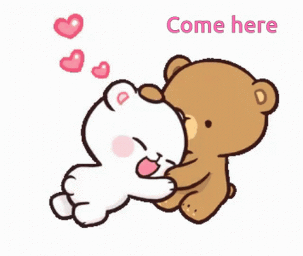

Thank You por seres quem és

Mesmo estando longe, sinto-te tão perto que parece que nunca estás realmente distante. És aquela miúda que tem tudo de mim, mesmo estando separados por uns tantos quilómetros.
Neste Valentine, queria dizer-te o quão especial és para mim. És como aquela música que não consigo tirar da cabeça, but way better hihih.
Apesar de por vezes nao parecer, o meu amor por ti arde bastante. És a pessoa que me faz sorrir mesmo quando estou acabado.
Can't wait to be with you again, a rir, a chatear-te, a beijar esses lábios ( ͡° ͜ʖ ͡°) .
Mas agora a falar a serio, tu és das melhores coisas que já me aconteceram, e, eu não te quero perder por nada. És muito especial para mim e eu Amo-te tanto mas tanto tu não fazes ideia quanto.
Então, love, wanna be my Valentine? ❤️
Claro que isto vem com beneficios dia 14 😚